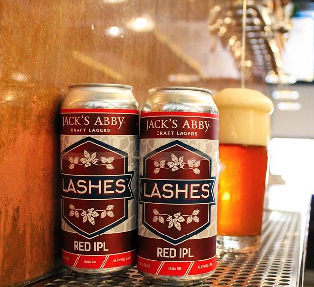

HOME
LAGER
Lashes Red IPL
Jack's Abby Craft Lagers
This Red IPL balances an assertive Munich Malt character with an infusion of Super Styrian, Columbus, and Palisades hops. It’s full-bodied and malty with a hop aroma that’s both spicy and piney. The lager’s beautiful amber hue takes after their head brewer’s luscious lashes.
Founded in 2011 by three brothers, Jack, Eric, and Sam Hendler, Jack’s Abby has become a mainstay of the craft brewing scene in the Northeast and nationwide. Located in Framingham, MA.
Check out their site HERE 